How buddies roam a named place while their owner is out and about (issue 617e): the readings of the owner's description, each running the same model the server will use. Circles are buddies, the white circle the owner, grey blobs rocks, the outline the named area's edge. The short tick on a buddy shows which way it circles the centre. The scenes with you in them are playable: Part 6.
The owner's first description (spacing, a pinwheel round the centre, lists of who is far enough) read four ways, before the owner's own waypoint rule.
Six buddies spread over one named area (about 120 by 90 yards, rocks in grey). Each tick, every buddy looks at twelve possible steps and standing still. The short tick on each circle shows which way it circles the area's centre; faint dots are the last few seconds of its path.
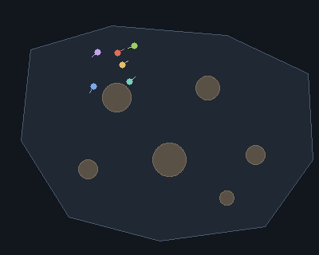
For each possible step, the buddy works out which others it would be at least the spacing away from: that step's "far enough" list. It prefers the step that brings it closest to having everyone on its list (measured by distance, so every yard gained counts), then the one that turns with its circling direction, then the one keeping its nearest neighbour near the spacing. Watch the start: bunched in a corner, they burst apart, then settle into an even spread across the whole area that slowly wheels, each on its own heading. This is the reading closest to "they each have their own separate 'far enough away from these buddy-bots' lists, one for each direction", with "direction" meaning each way it could step. Two fixes came from watching it: a buddy is gently pushed back once within 12 yards of the area's edge (without it they circled the rim in pairs), and the spacing is judged by distance rather than a yes/no count (without it a buddy inside a crowd saw no difference between steps and never left).
The same model, watching only the red buddy's decision. The rays are its twelve possible steps, brighter the longer that step's "far enough" list; dark rays are refused (a rock, or the area's edge). Green lines go to the buddies it will be far enough from after its chosen step, red lines to the ones still too close.
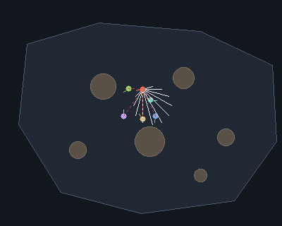
Early on, when they start bunched together, most lines are red and it steps outward, whichever way turns with its circle. Once the group has spread, the lines go green and the choice is decided mostly by the circling and a small random nudge, so it drifts rather than marching. Refused rays are how rocks are walked around: no pathfinding, just never choosing a step into one.
Each buddy looks only at its nearest neighbour: pushed away if closer than the spacing, pulled in if farther, and turning with its circle. The pale rings are the spacing around each buddy.
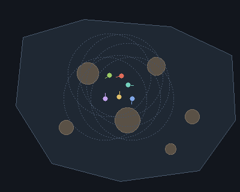
Simpler, and it also spreads them, but differently: since only the nearest neighbour counts, buddies tend to sit in twos and short chains at the spacing rather than covering the area evenly. A buddy far from everyone is pulled back toward the others ("they just try and congregate at a certain distance"), which keeps them together; Reading A lets a buddy wander alone as long as everyone is far enough. Fewer numbers to keep, less even coverage.
Here "one for each direction" means the two ways round the centre. Every tick, each buddy looks a few steps ahead both ways and keeps a "far enough" list for each; it circles the way whose list is longer. Orange buddies circle clockwise, blue counter-clockwise; watch them switch.
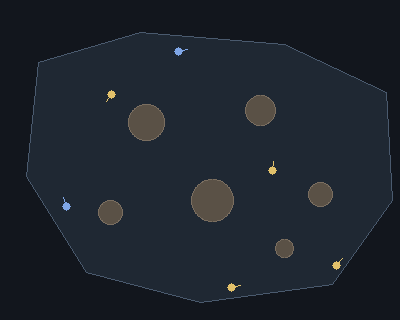
In practice most buddies end up circling the same way: whichever way has more room wins, and once most go one way, that way stays roomier. The occasional blue one turns back when it would crowd the one ahead, which reads as "pseudo-random" wandering from a distance. So in this reading the random starting direction doesn't last; if the owner wants each buddy to keep its own direction, Reading A holds it (the direction there never changes).
The same Reading A, run twice on the same map from the same start: dim-ringed buddies with a 12-yard spacing (close), bright ones with a 30-yard spacing (far). The owner said "whether that's close or far, doesn't matter".
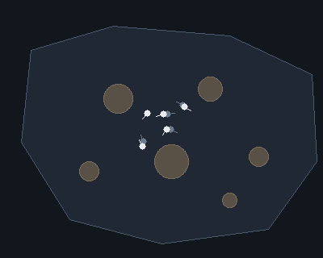
The spacing sets the whole look: close, they move as a loose pack that wheels together; far, they cover the area like sentries. Without a setting the model uses 0.6 of the even share (the side of the square each would get if the area were divided among them), about 22 yards here for six; the whole share, about 37 yards, was tried first and pushed them against the edges. Which reads best in game is a tuning choice, logged in the balance file when made.
Waypoints round the centre: the bearing turns a steady step, the distance out moves a little each time, crowded spots are nudged, and runs toward the middle cross it.
The owner's suggestion, in place of keeping an even distance. Each buddy walks to a waypoint (the cross, joined to it by a dashed line). When it arrives, it turns its bearing from the area's centre 40 degrees further in its own direction and picks the next waypoint on that bearing, a random share of the way from the centre to the area's edge. Waypoints stay 3 yards off rocks and the edge. Six buddies scattered over the area; the paths are drawn for the last several seconds.
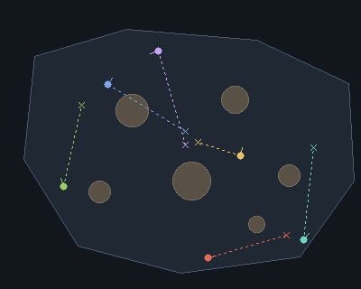
Every buddy goes round, but at its own rate: a run of waypoints near the centre makes a quick small lap, and one far out sends it on a long walk to the rim. So buddies overtake each other, cross paths, and now and then share a patch of ground for a moment before one leaves. Nothing keeps them apart: two may walk side by side for a waypoint or two. Measured over a long run (6000 ticks): the nearest other buddy is on average 19 yards away (24 in Reading A), and under 6 yards 9% of the time (0% in Reading A). Since the share is uniform along the bearing, half of the waypoints fall in the inner half of the distance to the edge, which is only a quarter of the area; the middle is visited more than the rim.
Only the red buddy. The small plus is the area's centre; the grey line runs from the centre along the buddy's current bearing to the area's edge, the whole length its waypoint could fall on. The cross is where the random share put it. Earlier waypoints stay as dots.
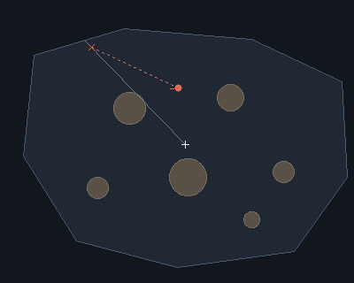
The bearing moves on by the same angle every time, so the dots form a spiral-like fan: some close to the plus, some near the rim, in no order. Short hops near the centre go by fast, long ones out to the rim slow the lap down. When a rock blocks the chosen spot the share is re-rolled; when a rock covers the whole bearing, the bearing turns one more step. A buddy that can't reach its waypoint (stuck behind a rock for twice the straight-line time) gives up on it and takes the next one.
The owner, on Reading D: "we might want some combination of these behaviors". One way to combine them: the same waypoints, but a spot within 20 yards of another buddy's current waypoint is passed over for another on the same bearing. The pale rings are those 20 yards round each waypoint.
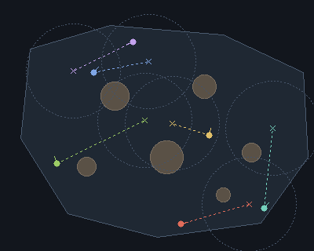
Spacing is now kept between destinations rather than step by step, so buddies still bunch briefly while passing each other, but they no longer end up heading for the same spot. It costs one check per waypoint instead of one per step, and leaves the random lap speeds of Reading D alone. Other blends are possible (Reading A's spacing steps while walking to the waypoint, or re-rolling only waypoints near other buddies themselves); this is the cheapest. Measured the same way as Reading D: the nearest other buddy averages 23 yards away and is under 6 yards 2% of the time. Up to 8 spots are tried on the bearing; when none is 20 yards clear, the roomiest is taken rather than turning the bearing further (turning further was tried first: a quarter of the waypoints skipped a step, and a buddy could be sent across the whole area).
The owner's rule for Reading D. Call a waypoint's distance from the centre its Y (a share of the way to the edge on its bearing) and its bearing round the centre its X. Y is a whole number from 1 to 100, the percent of the way out. Each new waypoint adds or takes away, at even odds, a whole number from 1 to 20: from 50% of the way out, the next is anywhere from 30% to 70%, and never nearer the centre than 10 yards. X turns a tenth of a circle (36 degrees) each waypoint (it was 40). The map now has small rocks, ruined crates (squares), raised ground (rings), two hills and a dip (lighter is higher) and a road (brown); here buddies still walk straight and orbit obstacles.
Each buddy drifts in and out gradually, so its laps change size a little at a time: a few tight fast laps near the middle, then a slow spiral out. Measured over a long run, the waypoints fall in each fifth of the way out (inner to outer) 24%, 20%, 18%, 16%, 22% of the time. Adding and taking away the same amounts leans neither way, so over time every distance is drawn about equally (a rock in the way moves that one waypoint along its bearing to the nearest clear spot, without changing the drawn Y the next one starts from), a little more at the very middle and the very edge, where the 1 and 100 limits hold a buddy for a step or two. (Multiplying Y by 1 plus or minus the change was built first, a misreading of the rule: it leaned inward, a step out and back in multiplying Y by (1 + c)(1 - c), just under 1, and over half the waypoints ended in the inner fifth.)
The owner: "if the buddy-bot's waypoint gets pretty close to middle after having two low 1-20% rolls, we should pierce through the center and reverse their orientation [...] To make an S shape, or a figure 8 passing through the middle". Two buddies, long trails. After two inward rolls in a row that leave Y at 25 or under, the next waypoint goes on the far side of the centre at the same Y, and the buddy turns the other way round.
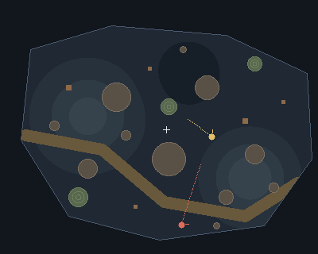
A buddy spirals in over a few waypoints, crosses the middle, and carries on round the other way, so its trail draws an S; the next time it spirals in and crosses, the loops close into a figure eight. Measured over a long run: 5.4 crossings per 100 waypoints. The count of inward rolls starts again after each crossing, so a buddy never crosses twice in a row.
Getting to each waypoint: round rocks, crates and raised ground, down gentle slopes, along roads, out of a side tunnel.
A crowded start in the rockiest corner, with long trails. No path is planned: each tick a buddy simply refuses any step that would enter a rock (keeping a yard and a half clear) or leave the area.
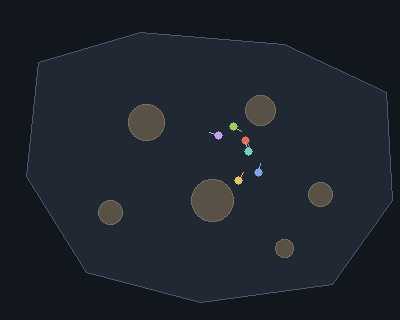
Twelve headings are enough to slide round rocks of this size; the trails curve along the rock edges. What this can't do is find the way out of a dead end (a cave mouth, a U of rocks): in game those areas would need the server's own pathfinding for the step, which is the next thing to decide once the reading is chosen.
Three buddies on the cluttered map, with the owner's Y rule. Each obstacle has a dashed orbit circle 2.5 yards out. When the straight line to a buddy's waypoint crosses one within 15 yards, the buddy aims along the tangent to that circle, on the side its waypoint lies; the circle it is going round lights up.
Paths bend round rocks, crates and raised ground at a distance instead of walking up to them and sliding along. Measured: a buddy is within a yard of an obstacle's edge 6% of the time with orbiting, 21% without. The side is kept until the buddy is past, so it doesn't dither; when the waypoint is straight behind the obstacle, it goes round the way it circles the area. This walker knows every obstacle in advance, which the game won't; the planner in the next animations finds them by testing the ground.
The owner's planner. On picking a waypoint, a buddy draws the straight line to it and places test points along it one body width apart (the dots ahead of each buddy). At each it reads the ground height, under its centre and both shoulders. A jump in height that stands out from the slope around it is an obstacle: the path bulges round it with a half-cosine ease out, a straight run past it at the peak, and an ease back to the line. The same is tried along four gentle bows either side of the line, and the cheapest wins: each yard costs more the steeper it is, up or down, and less on the road.
Buddies now plan round crates and rocks they only discovered by testing the ground, and bend onto the road when it runs their way. The hills here are gentle (the steepest about 21 degrees), so steering off their slopes only saves a little climbing; steeper ground would show it more. Measured over a long run against the straight walker of the last animation: height climbed or descended per 100 yards walked 8 (planned) against 9 (straight); share of walking on the road 13% against 7%; time standing on an obstacle 0.0% against 0.0%. Buddies here are sized like different races (0.6 to 1.95 yards wide), so their dots are spaced differently. The owner's 5-yard rule is on from here: a waypoint landing within 5 yards of another buddy moves 10 points toward the middle of the way out. It moved 5% of waypoints; with it the nearest other buddy averages 22 yards and is under 6 yards 6% of the time, against 22 yards and 7% without.
One buddy, 1.95 yards wide (a tauren). At each new waypoint all five candidate paths it weighed stay drawn until the next: the straight line and a gentle bow either side at two heights, each with the bulges it needed round obstacles. The chosen one is bright, the others grey; a candidate that couldn't get past something within 16 yards is darker.
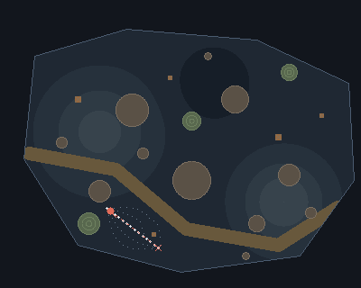
Most trips pick the straight line or the smaller bow; a big bow wins when the line runs over a hill or along the dip, and a bow onto the road wins when the road lies between. The bulges round a crate are small and sharp, round a big rock wide. Planning happens once per waypoint and took 1 to 15 milliseconds per trip in the model; in game each test point costs three height lookups, a few hundred per trip.
Two buddies making the same random choices, so they get the same waypoints: a human, 0.61 yards wide (green), and a tauren, drawn 3 yards wide to show the effect (purple; a real tauren is 1.95). Each is drawn to its real size, and tests the ground every body width along its way. Whoever reaches a waypoint first waits there for the other.
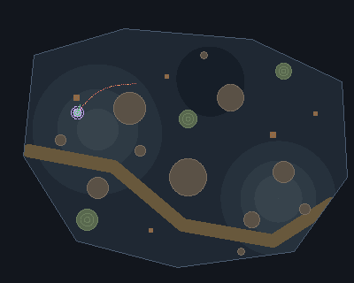
Their paths mostly agree but part where the ground is tight: the tauren's shoulders touch rocks the human's clear, so it bulges wider round them or takes another bow, and its test points are five times farther apart. Waiting at each waypoint keeps them side by side, so each difference shows as the two paths splitting and meeting again at the next cross. So larger races pathfind round obstacles "in differing increments", as the owner put it.
A chamber with a tunnel 8 yards wide running east to a small side chamber. Each waypoint is placed on its bearing from the chamber's centre (the small plus), and the line along that bearing stops at the first wall it meets (the owner: "move the 'edge' of the map to the closest of the walls"); the percent is of that distance. A bearing down the tunnel reaches the side chamber's back wall, one at the chamber's side stops there. One pull toward openings is added: when a bearing is chosen, the buddy looks up to half a step either side, and if the line there runs 20 yards or more farther (the tunnel's mouth), this one waypoint takes the middle of that opening. Buddies plan their paths as before; a ring marks a turning point.
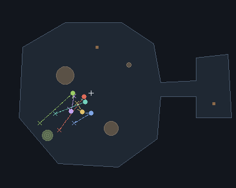
Every buddy's lap now passes the tunnel once, and when its distance number is past about half, it walks in, sometimes to the side chamber, and comes back out on the next waypoint. Measured over a long run: 4.7% of waypoints fall past the tunnel's mouth and 6 of the 6 buddies went in, against 0.3% and 1 of 6 with the walls rule alone. Without the pull, the tunnel is almost never reached: X turns exactly a tenth of a circle, so each buddy repeats the same ten bearings lap after lap, and only bearings within a few degrees of the tunnel's line reach into it. Half a step either side covers the whole circle between one bearing and the next, so no opening is missed, and the pinwheel's own bearing is left as it was. Leaving the tunnel, the straight line to the next waypoint runs through rock, so the buddy walks toward the centre until the waypoint comes into view and turns there: every waypoint is placed in sight of the centre, so that point always exists.
Buddies paint what they see and go where the paint is thin; the systems compared side by side.
The owner's painting idea, tried four ways on one new arena, all four clans of four starting at the same entrance (white square, at the foot of the L). The arena: a main hall with an L-shaped leg, a dead-end passage off the leg, and a tunnel from the hall to a side room that leads down a second tunnel to a far room. Each buddy lays paint on what it can see, most where it stands, less out to 60 yards; the floor is shaded by how much paint it has (dark: none; warm: much). In every panel the walls paint their own fringe too, within 5 yards of themselves, topped up every 3 seconds (blue-grey where the walls' paint is the greater); regenerated 2026-09-27 after the owner saw no wall paint in the first version, where the walls' paint was too weak to matter and was not drawn. The bar under each panel is how much of the arena has been seen from within 20 yards. Panels (counted by the white dots in each corner): 1, top left, today's pinwheel (the owner's rules), paint only drawn; 2, top right, the same pinwheel choosing by paint: of its proposal and eight near it, the least painted, farthest from the entrance, wins; 3, bottom left, no pinwheel at all: of 30 random spots 12 to 70 yards off, the least painted wins, and walls paint the ground within 5 yards of themselves every 3 seconds; 4, bottom right, the pinwheel run in the squished circle (the arena mapped onto a disc, see below) choosing by paint. Paths run through unpainted ground where they can (3 and 4, and 2), and round walls on their own.
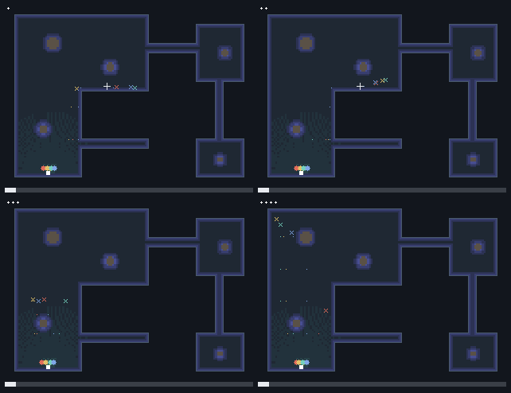
What the panels show, measured over six minutes of each system from the same start (the generator prints these): 1, today's pinwheel: 66%, 69%, 69% and 69% explored after about 20 seconds, 40 seconds, 1.5 minutes and 6 minutes; 0.8% of its time within 3 yards of a wall; 49% of its steps onto ground walked in the last 25 seconds; in tunnels 0.1% of its time, on average 1.5 yards off a tunnel's middle line. 2, choosing by paint: 67%, 69%, 69% and 69% explored after about 20 seconds, 40 seconds, 1.5 minutes and 6 minutes; 1.0% of its time within 3 yards of a wall; 43% of its steps onto ground walked in the last 25 seconds; in tunnels 0.2% of its time, on average 1.0 yards off a tunnel's middle line. 3, least paint and wall paint: 91%, 100%, 100% and 100% explored after about 20 seconds, 40 seconds, 1.5 minutes and 6 minutes; 0.6% of its time within 3 yards of a wall; 57% of its steps onto ground walked in the last 25 seconds; in tunnels 5.1% of its time, on average 1.0 yards off a tunnel's middle line. 4, the squished circle: 87%, 97%, 100% and 100% explored after about 20 seconds, 40 seconds, 1.5 minutes and 6 minutes; 0.9% of its time within 3 yards of a wall; 42% of its steps onto ground walked in the last 25 seconds; in tunnels 26.7% of its time, on average 1.2 yards off a tunnel's middle line. The two plain pinwheels never reach the tunnels: every waypoint sits on a straight line from the centre, and from the L's centre no straight line runs down the tunnel, so the side and far rooms stay dark whatever paint says. The squished circle fixes that: its rim is the whole outline in order, so the tunnels and the dead end are stretches of the circle's edge, and a pinwheel lap in the disc walks into every room; with paint choosing among nearby disc points, it explores everything with the fewest revisits. Least paint alone explores fastest but wanders: it has no laps, doubles back more, and its route is hard to predict. For least paint the walls' paint changes little in time near walls (0.5% without it): its spots are already chosen 3 yards off walls and its paths keep 1.5 yards off; where it matters is the room orbit's tunnels (the next comparison but one, 21). The disc map is made by laying the outline round a circle by distance along it and settling every inner cell at the average of its neighbours (a harmonic map); onto a convex shape like a circle such a map never folds, so each point of the disc names one place in the arena (the property in docs/reference/jacobian-conjecture/).
The owner, after the last comparison: "the third one I think looked the most natural. Don't forget to add the 'paint from walls' behavior! [...] their midpoint is the midpoint of the entire area, when it should be the midpoint of the room that they're in [...] we should identify rooms, as in, not tunnels, and we should orbit around those until the paint system tells us to be drawn toward a tunnel. If the walls extrude paint, then characters will be encouraged to walk through the center of the tunnel, not glide along it's walls." The hall is split by how far each spot is from the outline: places at least 7 yards deep (14 across) are room middles, the ground within 7 yards of them joins their room, and what is left, the narrow places, is tunnel. Here that makes three rooms (the hall with its L, the side room, the far room, each middle marked with a plus) and three tunnels (hall to side room, side room to far room, and the dead end). Panels: 1, least paint with the walls' paint (the one the owner liked); 2, the room orbit: the owner's pinwheel round the middle of the room the buddy is in, in that room's own coordinates, choosing by paint, until the room is 80% explored; then the paint draws it to the least explored place, a room or a tunnel (the dead end too), farther from the entrance weighing more (a thin line to that place while it goes); once every place is past 80%, to the least explored one if it is clearly less explored than where it is, so the last corners get seen; 3, the squished circle with paint; 4, the room orbit without the walls' paint. Walls' paint shows blue-grey.
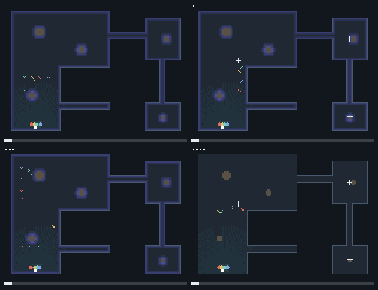
Measured over six minutes each from the same start: 1, least paint: 91%, 100%, 100% and 100% explored after about 20 seconds, 40 seconds, 1.5 minutes and 6 minutes; 0.6% of its time within 3 yards of a wall; 57% of its steps onto ground walked in the last 25 seconds; in tunnels 5.1% of its time, on average 1.0 yards off a tunnel's middle line. 2, the room orbit: 79%, 95%, 100% and 100% explored after about 20 seconds, 40 seconds, 1.5 minutes and 6 minutes; 0.6% of its time within 3 yards of a wall; 60% of its steps onto ground walked in the last 25 seconds; in tunnels 3.8% of its time, on average 0.7 yards off a tunnel's middle line. 3, the squished circle: 87%, 97%, 100% and 100% explored after about 20 seconds, 40 seconds, 1.5 minutes and 6 minutes; 0.9% of its time within 3 yards of a wall; 42% of its steps onto ground walked in the last 25 seconds; in tunnels 26.7% of its time, on average 1.2 yards off a tunnel's middle line. 4, the room orbit without the walls' paint: 80%, 91%, 100% and 100% explored after about 20 seconds, 40 seconds, 1.5 minutes and 6 minutes; 1.9% of its time within 3 yards of a wall; 36% of its steps onto ground walked in the last 25 seconds; in tunnels 3.2% of its time, on average 1.2 yards off a tunnel's middle line. The room orbit reaches every room and tunnel, the dead end included, which the whole-area pinwheel of the last comparison never did: each room's own middle sees its own walls, and the paint, not the lap, decides when to go on. Its laps round each room's middle keep it off the walls. Panels 2 and 4 show what the walls' paint does: with it, a buddy spends less time near walls and walks nearer a tunnel's middle line; it also makes buddies share those middle lines, so more of their steps land on ground walked just before. A first version counted a room as done at 80% and never drew buddies into tunnels: it stopped at 88% explored, with the dead end and the rooms' last corners unseen.
A clan of buddies explores the big dungeon: five rooms joined by a straight tunnel, an L, a fork, a loop and a dead end. Each goes where the paint is thin, and with sensing on it also reads eight sectors round itself: gold a tunnel, red a wall, grey open ground. Click a buddy to see its sectors; try sensing off, or a different blocked share, and watch the time to reach both far rooms.
A sector is a wall when most of what lies within the radius is rock, weighted toward what is near; it is a tunnel when, even so, a walkable way reaches the edge of the radius through its middle. A tunnel not seen up close lately is taken; with none, the buddy chooses by least paint. The walls paint a thin fringe every 3 seconds (blue-grey), which keeps paths in a tunnel's middle. The rules are the roaming pattern (docs/roaming-pattern.md), built twice: in Lua for the model, in JavaScript for this page, with a check holding both to the pattern. A drawn simulation, not the game.
Drawing monsters' attention, pulling packs to a tank, the kraken, and kiting alone. Drawn simulations of the intended behaviour, not the game's combat.
Monsters (red) with their aggro radius (dashed): a buddy that comes inside it is noticed and attacked. The owner: "bots will try to move within aggro range of monsters that they are near, nudging their waypoints to move the tangent line between them and the mob's aggro radius somewhere interior to the radius". When the line to a buddy's next waypoint passes within 25 yards outside a living monster's radius, the trip bends through a point 70% of the way in from the edge of that radius, on the side the line passes; a ring marks that point. A fight here is the buddy standing still for a few seconds while the monster falls; it comes back later.
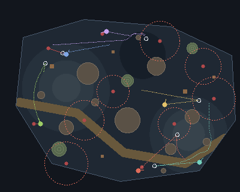
Buddies now bend their laps to brush past monsters near their way and pull them, instead of passing them by, and after the fight carry on round. Only the first monster along each trip bends it, so a buddy isn't dragged from one to the next across the area. Measured over a long run: 8.9 fights per 100 waypoints with the nudge, 6.1 without (a fight then only when a lap happens to cross a radius). In game the radius comes from the server itself (each creature's aggro range against that buddy), and only monsters that attack on sight count.
The owner's fighting design (617e5), drawn as a simple simulation, not the game's combat: health, damage and casting times are round numbers picked so the whole sequence fits. Monsters (red) within 16 yards of each other are one pack (faint lines join them; dashed circles are how near a buddy must come to be noticed): pulling one brings them all. The tank (red) walks up to a pack, is noticed, and brings the whole pack back to a gathering spot (dashed white circle) 35 yards toward its clan; while bringing it back and holding it there, it reaches out and taunts any other monster within 30 yards into the fight (a gold line), the owner's "blender reaching out and pulling foes into it's maw", as long as the fight stays within what it can hold (six monsters, its health above half). The mage (blue) casts an area spell (blue storm) when two or more monsters stand together, single frostbolts otherwise; the rogue (yellow, instant attacks only) keeps moving at its target's side, hopping (a ring over it) now and then, and fans its knives (a yellow ring) when three are round it; the healer (green) heals the tank (green line). The hunter (purple) roams on its own until it sees its clanmates fighting within 90 yards, then comes to help (dashed line) and shoots the tank's target.
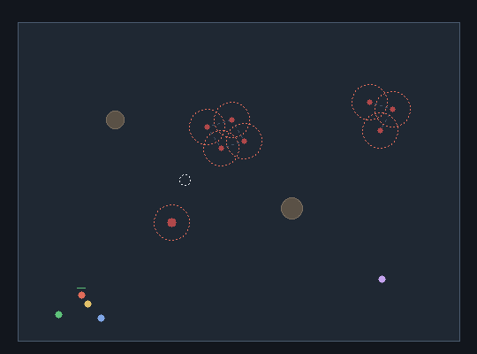
The elite boss stands about 25 yards from the first pack's gathering spot, so the tank taunts it in while bringing the first pack back, and the first fight takes the pack and the boss together, down in the same area spells (in the first version the tank left the boss for a third fight of its own). Then the second pack. With the first pack, the storm draws one monster onto the mage: it frostbolts it (a blue ring: slowed), blinks away (dashed white line), and the tank takes it back (red line), the owner's "blink to try and get distance, ideally after doing a frostbolt to slow them down". While the boss is in the fight the mage weighs area and single spells about equally, as the owner put it ("unless there's a boss or something, in which case they'll prefer AoE and single-target spells roughly equally"). What this needs from the game, for 617e5: finding packs by the server's own link and assist ranges, a gathering spot clear of other packs, and the damage dealers' area-spell thresholds lowered for buddies; playerbots already has area and single-target strategies to weigh.
The owner's battle pattern (617e5), drawn as a simple simulation, not the game's combat: health, damage, speeds and cast times are round numbers picked so a whole run fits. The maw (the blue ring) is where the pack is held and the area spells land (the blue storm); faint lines divide the ground round it into quadrants, and the faint circle is the ranged damage dealers' orbit. The tank (red) stays within a few yards of the maw, leaning toward the nearest monster outside it and taking it with its 30-yard taunt (a gold tentacle line); when a monster is taken from one side, the tank steps to the maw's far side until that monster is inside. The mage (blue) and the hunter (purple) are the other tentacles: they orbit the maw casting instants on the move, go out to a monster the tank can't reach (a dashed line to it), hit it once and slow it (a pale blue ring), then lead it to the far side of a neighbouring quadrant (a small ring marks where), never the opposite one, blinking or disengaging (a dashed white line) when it gets too close, and kiting it round the maw until the tank takes it. The rogue (yellow) fights at the tank's target and fans its knives in the pack; the healer (green) heals the tank. When everything held is dead and the maw is empty, the whole formation moves on to the next pack.
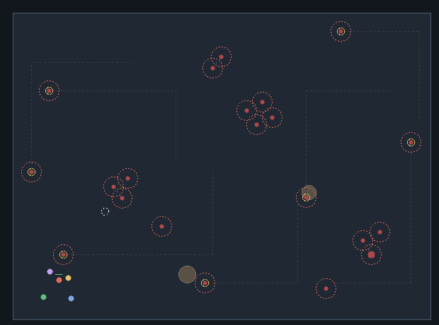
What happened in this run (counted as it was drawn): the tank's taunts 17 (2 reaching out for a monster in range, 12 taking back one that was on someone else); the mage's and the hunter's pulls 10, slows 13, blinks 4, disengages 4; area spells 21; heals 7; 20 of 20 monsters killed; the formation moved on 3 times. What drawing it showed: most pulled monsters are taken by the tank's taunt before they ever reach the puller (the neighbouring quadrant keeps them within the taunt's 30 yards of the maw), so the tentacles work as the owner put it, the puller only has to bring a monster into reach. Escapes (blinks, disengages) happen only because the puller stands to cast: a monster as fast as the puller never catches one that keeps walking away, so the kiting rhythm (cast, the monster closes, blink or disengage) comes from the cast-time spells. A ranged pull brings the monster's whole linked pack, not just the one hit: a pulled pair keeps a puller kiting for a taunt's cooldown while the tank takes them one at a time.
A party of five explores the same dungeon, the tank leading by least paint; packs stand in the rooms, each with a lone outlier, and patrols (gold rings) walk the tunnels. When a fight starts, the maw (blue ring) is set and the kraken plays out: gold lines are the tank's taunts, pale blue rings slows, dashed white lines blinks and disengages. Try the kraken off for an ordinary fight, more patrols, or a different melee buddy.
The tank holds within 6 yards of the maw and reaches out with its 30-yard taunt while the hold is light; the mage and the hunter fetch outliers with one hit and a slow, lead them into a neighbouring quadrant, and kite round the maw until the tank takes them. Monsters are faster than the party, so slows, blinks and taunts save a puller, not its legs. Area spells land when two or more stand in the maw; against an elite, area and single-target spells about equally. When everything held is dead, the party moves on. Health, damage and speeds are round numbers: a drawn simulation of the intended behaviour, not the game's combat.
The owner's kiting in the wild (617e5): a lone mage (blue, left half) and a lone hunter (purple, right half), each among its own monsters, drawn as a simple simulation, not the game's combat. Each pulls a monster (one hit and a slow: the pale blue ring) and leads it toward the most room: from points a little way out in 16 directions, the one farthest from monsters not already chasing it (the white tick shows the way chosen). A monster that gets too close is escaped with a blink or a disengage (the dashed white line). The mage stands to cast frostbolts when its monster is slowed and far enough (a dashed ring while casting); the hunter shoots on the move. Killed monsters come back where they stood (a closing dashed ring shows when). The ring of sectors round each kiter is its memory of danger by direction, brighter where danger was met recently or where a monster it killed is due back; a direction that is due is avoided even when it has the most room (a red ring flashes when that happens).
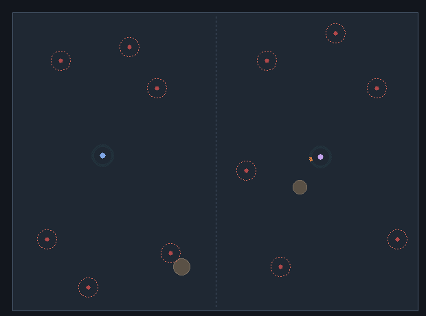
What happened (counted as drawn): pulls 6, slows 29, blinks 9, disengages 10, killed 5, came back 2, monsters that noticed a kiter on their own 1, times a kiter turned away from the roomiest direction because danger was due there 7. The memory makes the kiter steer round places where it has been killing, just before they fill again. What it needs from the game: each buddy's own record of where it met monsters and killed them (the server knows every creature's respawn time, but a buddy "keeps mental track" of what it saw, so the record is its own, not the server's).
The scenes with you in them, playable: move the cursor (or a finger) over the area and your dot follows.
You are the white dot; it walks toward your cursor (or finger). Five buddies roam the area with the owner's waypoint rule (the small crosses are where each is heading) and group by distance as they go. The rings round you are drawn at half the real distances so the drawn area can hold them: green, join inside 60 yards; gold, 74 (the range kill experience is shared in); red, leave outside 75. A white ring and line mark a buddy in your group, which holds four; a gold ring marks one in a far party, its members joined by gold lines.
YouW warriorM mageH hunterP priestR rogue
A buddy joins your group when its roaming brings it inside 60 yards and a seat is free, nearest first, and leaves only once past 75, so a grouped buddy is almost never outside the 74-yard experience range, and the gap between the rings keeps one at the edge from flickering in and out. Past 74 an ungrouped buddy finds a far party: one with room that has a member within 70 yards, or another loose far buddy within 70 to start one with; two far parties merge when members come within 70 and together they fit in five. A far-party buddy leaves its party when it comes back within 74 yards of you (and so whenever it could join yours) or strays more than 74 from every other member; a party left with one member breaks up. Between 60 and 74, or nearer while your group is full, a buddy is in no group. Buddies don't steer toward you: grouping follows wherever their roaming takes them. The rules are checked twice a second here (every 5 seconds in game). A drawn simulation of the intended behaviour, not the game.
You are the white dot; it walks toward your cursor (or finger). Four buddies follow you: a mage, a hunter, a priest and a melee fighter. Walk into monsters to start a fight. A lone monster gets an ordinary fight. When three or more monsters stand where area spells reach them all, the buddies run the kraken round you: the damage dealers pick the maw (gold), and you drag monsters to it. You take a monster by coming within 8 yards of it; that stands for all of a tank's ways of taking one. The mage and the hunter pull outliers to you: one hit and a slow (blue), a lead into a neighbouring quadrant, a blink or disengage when it gets close, then kiting round the maw until you take it.
YouM mageH hunterP priestF melee fightermonster (a big one is an elite)
The melee buddy spins blades through everything near it.
Pullers pull only while the enemies on the party count for less than what the buddies think you can take. They start cautious, at 2 (an elite counts 3). The number rises while you hold that much and stay healthy, and falls when your health runs low or you go down. The melee buddy's kind changes whom it hits: a whirlwind hits everything near the maw; a heavy hitter kills the marked skull, then the cross; a control fighter slows the monsters not yet on you. Monsters come back 30 seconds after they die. A drawn simulation of the intended behaviour, not the game's combat.